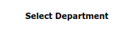
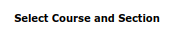

def TermFinder(): click(Pattern().targetOffset(0,32)) terms = 0 while exists() == None: type(Key.DOWN) terms += 1 terms = terms - 4 type(Key.PAGE_UP) return terms def DepartmentFinder(): click(Pattern().targetOffset(0,32)) department = 0 while exists() == None: type(Key.DOWN) department += 1 department = department - 4 return department def CourseFinder(): click(Pattern().targetOffset(0,32)) course = 0 while exists() == None: type(Key.DOWN) course += 1 course = course - 4 return course def TermSelector(int,webAddress): type(Key.N, KeyModifier.CTRL + KeyModifier.SHIFT) type(webAddress + Key.ENTER) click(Pattern().targetOffset(0,32)) for number in range(0, int - 1): type(Key.DOWN) def DepartmentSelector(int): click(Pattern().targetOffset(0,32)) for number in range(0, int - 1): type(Key.DOWN) def ClassSelector # Main webAddress = input("Please paste in the Bookstore's Website and make sure your Chrome browser window is small so that the bottom of the tables have only a few pixels between the scroll bar") type(Key.N, KeyModifier.CTRL + KeyModifier.SHIFT) type(webAddress + Key.ENTER) terms = TermFinder() if terms == 1: departments = DepartmentFinder()